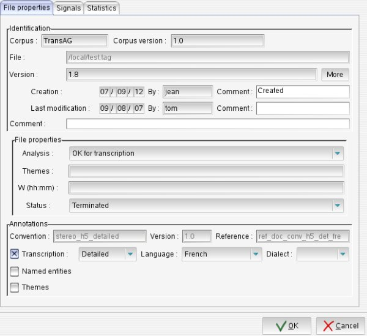
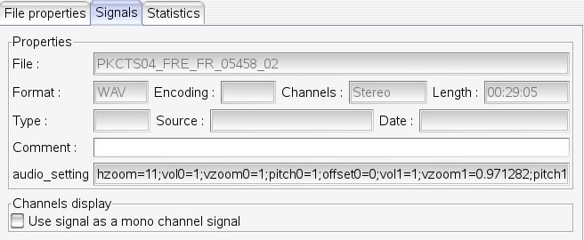
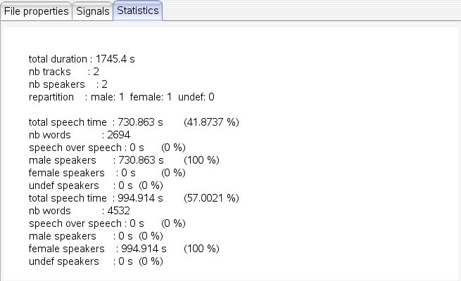

Annotation File Properties
Screenshot

Description
The annotation file properties window displays information about the current annotation file:
The File properties page gives general information about the current file:
- File identification:
- file path, related corpus,
- file versions information: current version id, creation and last modification dates and author, optional comment. Author and comment can be edited. The More button gives access to complete version history (file version history, transcriber id, modification date and activity time).
- File properties depend on applicable annotation conventions.
- Annotations bloc informs about the used convention and allows to specify some transcription details (like annotation language).
The Signals page gives information about current annotated signal:

- signal file path,
- file format, encoding, number of channels and duration,
- some meta data that can be edited: recording type (mainly broadcast / conversational), source and date,
- an optional comment,
- last saved audio display settings(volume, vertical zoom, horizontal zoom, pitch)
- option for hiding a signal track (available for stereo only)
The Statistics page gives some statistics about the current annotation file:
